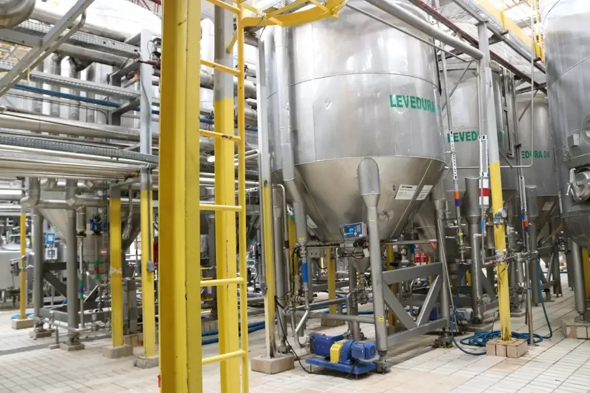

A fábrica da Heineken em Ponta Grossa, no Paraná, iniciou suas operações em 2019, e contém o contrato de 10 anos com a fábrica, após a aquisição da cervejaria local pelo grupo Heineken. Desde então, a unidade tem se destacado por seus projetos de inovação e sustentabilidade, refletindo o compromisso da empresa com a eficiência operacional e a responsabilidade ambiental.
Nos últimos anos, a fábrica tem implementado tecnologias avançadas para automatizar processos e garantir a qualidade dos produtos. Sistemas de controle de qualidade e rastreabilidade foram integrados, aumentando a segurança e a eficiência na produção.
A Heineken em Ponta Grossa também tem investido fortemente em iniciativas sustentáveis. A fábrica adotou tecnologias para reduzir o consumo de água e energia, além de instalar sistemas de reaproveitamento de recursos. O compromisso com a sustentabilidade inclui a redução do uso de materiais não recicláveis.
Além disso, a unidade tem experimentado novas receitas e estilos de cerveja, alinhando-se às tendências de mercado e às preferências dos consumidores. Parcerias com universidades e centros de pesquisa têm sido fundamentais para o desenvolvimento de inovações tecnológicas que aprimoram tanto a produção quanto a qualidade dos produtos.
A combinação dessas iniciativas demonstra a visão da Heineken em Ponta Grossa de ser uma referência em inovação e sustentabilidade no setor cervejeiro. Para informações mais específicas sobre projetos futuros, é recomendável acompanhar os canais oficiais da Heineken e notícias relacionadas à empresa.